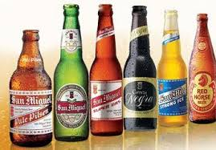
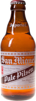
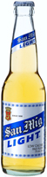
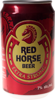

かつては、フィリピンの ナンバーワンビールである「サン・ミゲル ビール」や 清涼飲料、洋酒、食料品を扱う食品会社として国際的な知名度を得ていたが、2000 年代に入り、経営の多角化を加速。には、 看板事業 であったビール 事業を担う子会社の株式の43%を日本の 麒麟麦酒 に売却する一方、売却益を有料道路や電力会社、製油所、不動産などへの投資に振り分け、多数のグループ企業を設立している。
サンミゲール スタイニー
ピルセン

フィリピンで、絶大な人気とシェアを持ったビールで、スタイニー瓶が特徴。昔から世界中で愛飲されているすっきりとした飲みやすい南国のビールです。タイプ：ピルスナー
サンミグライト
サンミゲール社が醸造したライトビールです。サンミゲールの味わいをしっかりと残した、カロリーを１本当り107.6kcalとひかえめにした飲みやすいビール。特に若者を中心に大人気の商品です。タイプ：ピルスナー
レッドホース
サンミゲール社がつくるエクストラ・ストロング・ビール。濃い味わいと力強さが際立った満足度の高いビール。フィリピンでも大人気商品で、全土に渡って知名度の高い商品。タイプ：ラガー
- ビールは好きですか？
- 嫌いです
- 焼酎は好きですか？
- 嫌いです
- テキーラは好きですか？
- 嫌いです